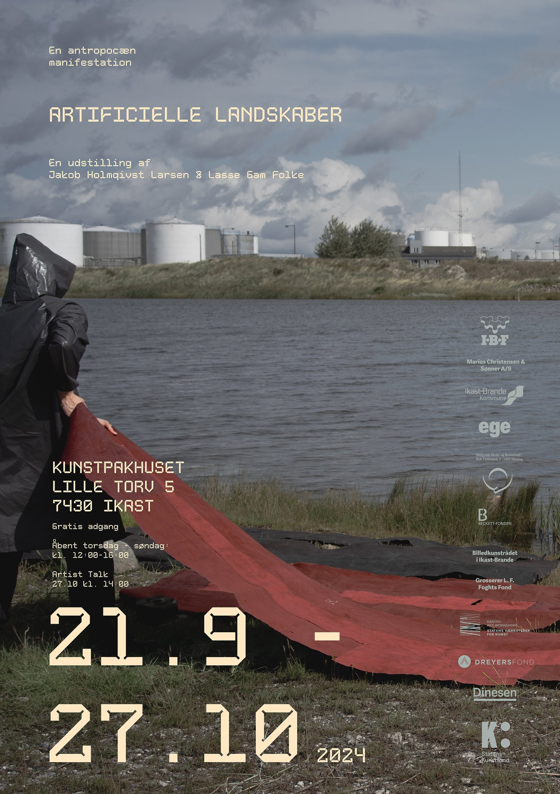
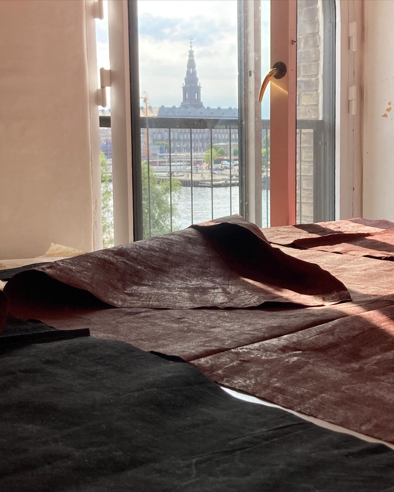
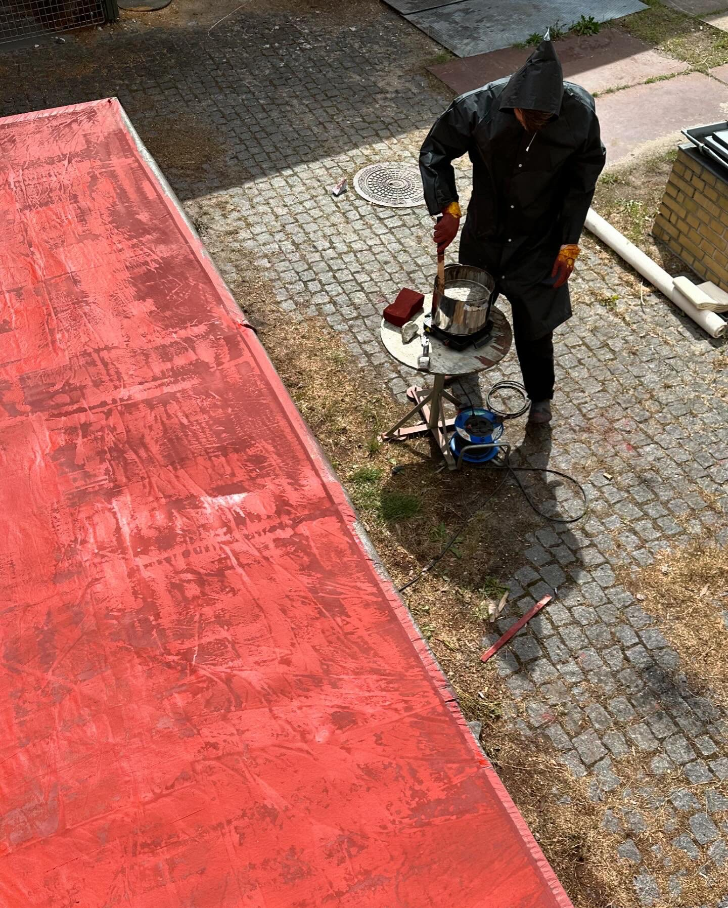
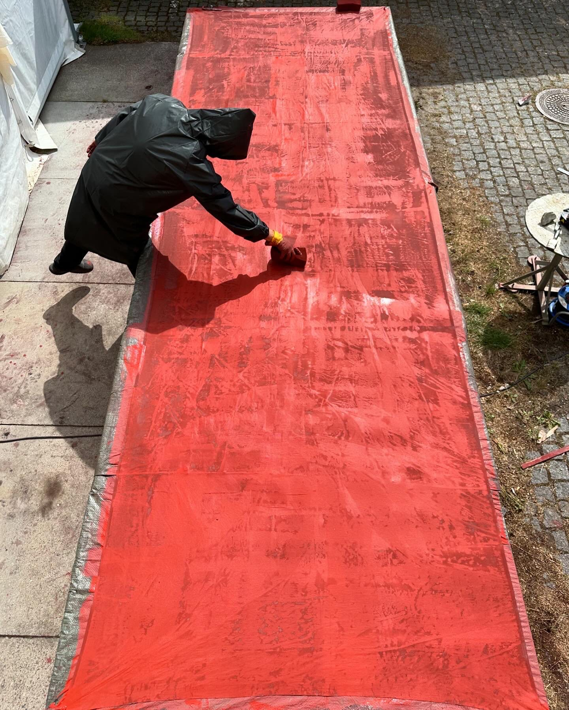
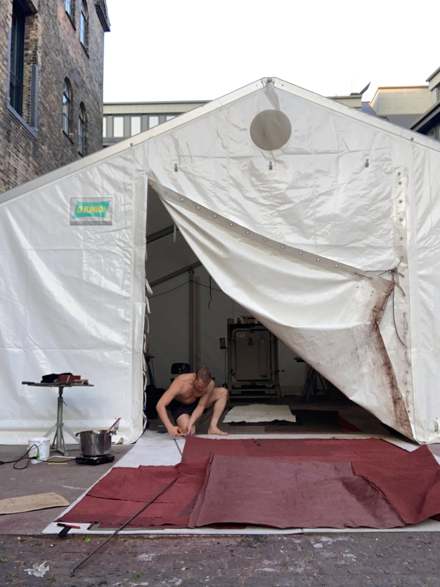
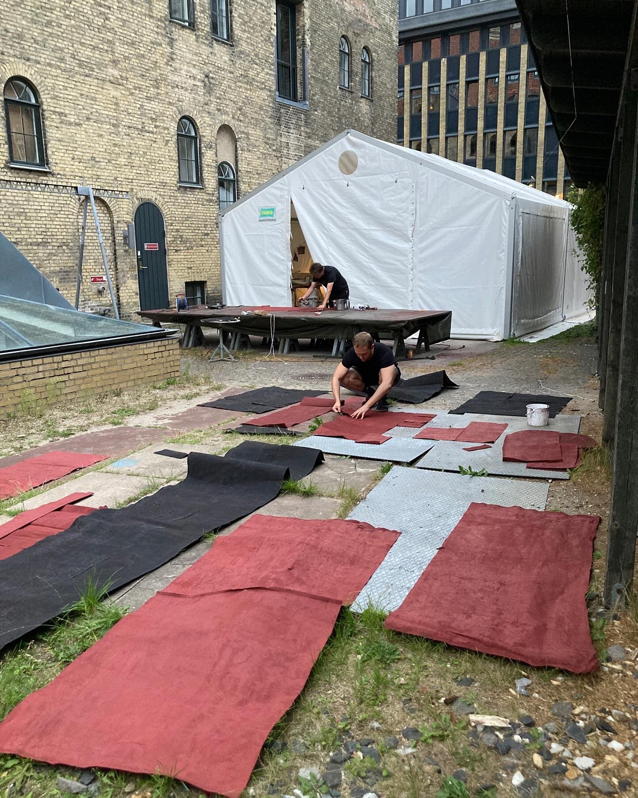

UPCOMING EXHIBITION ARTIFICIAL LANDSCAPES
exhibition in Kunstpakhuset sept. 21st to oct. 27th 2024.
artificial landscapes / Anthropocene manifestations
in collaboration with lasse folke - http://lassefolke.dk
An artistic investigation of the 'Anthropocene' with lasse gam folke. Exhibition in Kunstpakhuset in Ikast from sept. 21st to oct. 27th 2024.
'exhibition: artificial landscapes'
sept. 21st - oct. 27th (2024)
in Kunstpakhuset
in collaboration with
lasse gam folke
.
a huge thank you to all the kind sponsors
supported by
Beckett Fonden
Dinesen
Dreyers Fond
Grosserer L.F. Foghts Fond
IBF Beton
Kunstrådet i Ikast-Brande
Marius Christensen & Sønner A/S
Statens Værksteder for Kunst
Statens Kunstfond - Projektstøtte Arkitektur
.
photos by
christian vennerstrøm
lasse gam folke
jakob holmqvist larsen
Proces - textile colouring and collaging
http://lassefolke.dkKunstpakhusetlasse gam folkeBeckett FondenDinesenDreyers FondGrosserer L.F. Foghts FondIBF BetonStatens Værksteder for KunstStatens Kunstfond - Projektstøtte Arkitektur





